The Gods of Pegana: World Lore
The world of this story as one picture dictionary: its events in order, then every place, being and power in it, each with the drawn mark and the painting it carries in the video.
The story, in order (23 events)
- MANA-YOOD-SUSHAI makes the small gods and Skarl MANA-YOOD-SUSHAIThe Small GodsSkarl
- Skarl makes a drum and begins to beat it without ceasing SkarlSkarl's DrumPegana
- Weary from making, lulled by the drum, MANA-YOOD-SUSHAI falls asleep MANA-YOOD-SUSHAIMiddle of Time
- A hush falls on Pegana; the small gods see MANA rests and resolve to keep silence The Small GodsSilence of PeganaPegana
- The small gods resolve to make worlds while MANA rests The Small GodsThe Game
- The gods raise their hands and make the worlds and suns The Small GodsThe Worlds
- The gods make the Bright One to seek from end of worlds to end without finding The Small GodsThe Bright One
- The gods make the Moon to watch all things and be silent The Small GodsThe Moon
- The gods make the Star of the Abiding and set it in the North to rest The Small GodsStar of the Abiding
- The gods make Earth to wonder The Small GodsEarth
- A million years pass; Kib tires of the first game and covers Earth with beasts KibEarthMan
- The other gods question Kib's beasts and fear he will make men and endanger the Secret The Small GodsSecret of the GodsKib
- Mung, jealous of Kib, sends Death among the beasts but cannot stamp them out MungMan
- Another million years pass; Kib makes Men out of beasts and Earth is covered with men KibManEarth
- The gods set a veil between Man and his ignorance to guard the Secret The Small GodsManThe VeilSecret of the Gods
- Mung grows busy among men; all the other gods join Kib in playing the game of men MungThe Small GodsManThe Game
- Kib breaks the Silence of Pegana by speaking with his mouth like a man; all gods are angry KibSilence of PeganaThe Small Gods
- The arm of Skarl ceases; his drum falls silent; silence startles Pegana like thunder in a cave SkarlSkarl's DrumSilence of PeganaPegana
- MANA-YOOD-SUSHAI wakes at the Last MANA-YOOD-SUSHAIThe Small GodsThe WorldsThe Last
- The gods hastily put their worlds behind them as MANA laughs The Small GodsThe WorldsEarth
- MANA-YOOD-SUSHAI destroys the gods; gods and worlds depart MANA-YOOD-SUSHAIThe Small GodsThe Worlds
- Skarl puts his drum on his back and walks into the void beyond the worlds SkarlThe Void Beyond the Worlds
- Only MANA-YOOD-SUSHAI remains; it will be lonely for him MANA-YOOD-SUSHAI
The terms (21): each is drawn this way in every scene
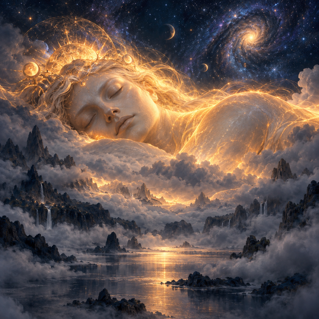
PaintedMANA-YOOD-SUSHAI
beingThe supreme being who made all the gods and will remain alone when all else ends.
Looks: A vast pale perfectly-still sleeping presence half-seen above the mist, enormous and serene, radiating ancient warmth.
- made and will destroy at the Last The Small Gods
- made alongside the gods Skarl
- Skarl drums without ceasing to keep sleeping this
- Star of the Abiding mirrors the rest of this
Facts and source words
- Maker of all the small gods, who wrought and then rested
- Sleeps while Skarl drums; none may pray to him but the gods he made
- Will wake at the Last, destroy all gods and worlds, and remain alone
“the maker of all small gods, who is MANA-YOOD-SUSHAI” (S1)
“But at the Last will MANA-YOOD-SUSHAI forget to rest, and will make again new gods and other worlds, and will destroy the gods whom he hath made.” (S1)
“And the gods and the worlds shall depart, and there shall be only MANA-YOOD-SUSHAI.” (S1)
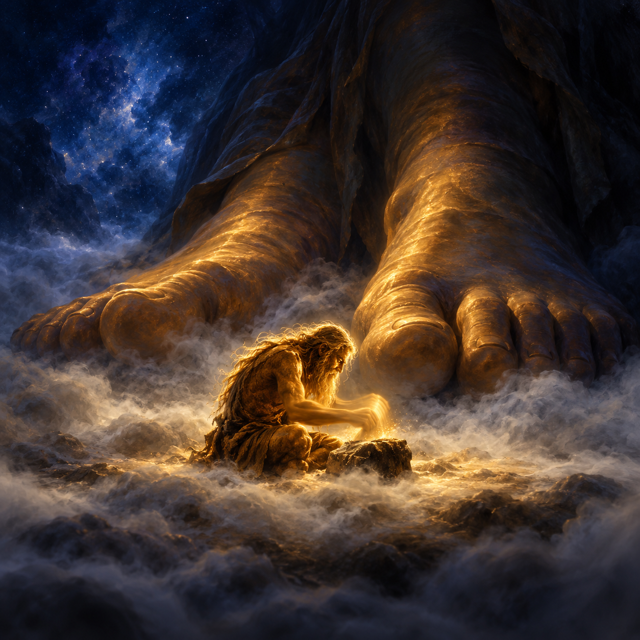
PaintedSkarl
beingThe tireless drummer who beats his drum without ceasing so that MANA-YOOD-SUSHAI will not wake.
Looks: A hunched gold-lit figure sitting on the mist before great sleeping feet, one arm moving without pause in the near-dark.
- drums without ceasing to keep sleeping MANA-YOOD-SUSHAI
- sits above upon the mist before MANA's feet The Small Gods
- walks into at THE END The Void Beyond the Worlds
- MANA-YOOD-SUSHAI made alongside the gods this
Facts and source words
- Made alongside the gods; sits upon the mist above them before MANA's feet
- Beats his drum without ceasing so MANA will not wake
- At the Last will walk into the void, his work complete
“Skarl sitteth upon the mist before the feet of MANA-YOOD-SUSHAI, above the gods of Pegana, and there he beateth his drum.” (S1)
“if he cease for an instant then MANA-YOOD-SUSHAI will start awake, and there will be worlds nor gods no more.” (S1)
“Then shall Skarl put his drum upon his back and walk forth into the void beyond the worlds, because it is THE END, and the work of Skarl is over.” (S1)
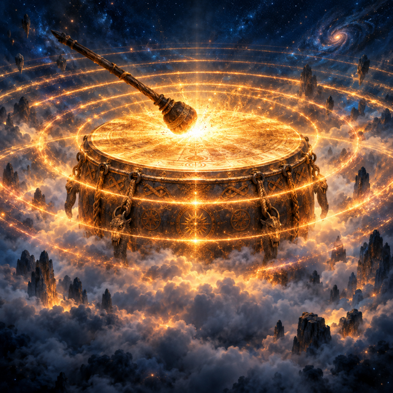
PaintedSkarl's Drum
objectThe drum whose unending beat is the hidden source of all existence, its echoes becoming worlds and suns.
Looks: A great glowing drum on the mist, concentric rings of gold sound-light rippling outward from each strike into the void.
- may be the echoed or dreamed source of The Worlds
Facts and source words
- Made by Skarl to beat for ever; worlds and suns are its echoes or the dreams it brings to MANA's mind
- While it sounds, existence continues; when it stops, silence comes like thunder in a cave
“Some say that the Worlds and the Suns are but the echoes of the drumming of Skarl, and others say that they be dreams that arise in the mind of MANA because of the drumming of Skarl, as one may dream whose rest is troubled by sound of song, but none knoweth” (S1)
“when at the last the arm of Skarl shall cease to beat his drum, silence shall startle Pegana like thunder in a cave” (S1)
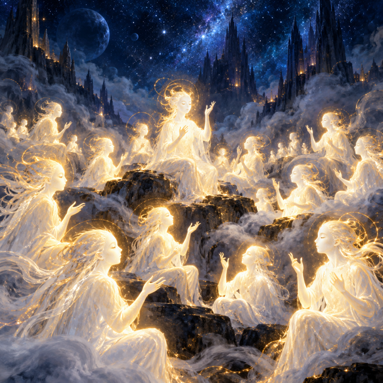
PaintedThe Small Gods
beingThe gods made by MANA-YOOD-SUSHAI who play with worlds and life while their maker sleeps.
Looks: Many shining white presences gathered in the hush of Pegana, hands raised and gesturing, mouths sealed shut.
- dwell in Pegana
- made to amuse themselves while MANA rests The Worlds
- made as the Seeker The Bright One
- made as the Watcher The Moon
- made as the Resting One, mirroring MANA Star of the Abiding
- made last to wonder Earth
- set between man and his ignorance The Veil
- MANA-YOOD-SUSHAI made and will destroy at the Last this
- Skarl sits above upon the mist before MANA's feet this
- The Moon watches the games of in silence this
Facts and source words
- Made by MANA-YOOD-SUSHAI; speak with their hands to keep silence
- Play with worlds, suns, life and death while MANA rests
- Will be ashamed and destroyed when MANA wakes at the Last
“all things that have been were wrought by the small gods, excepting only MANA-YOOD-SUSHAI, who made the gods and hath thereafter rested.” (S1)
“We are the gods; We are the little games of MANA-YOOD-SUSHAI that he hath played and hath forgotten.” (S1)
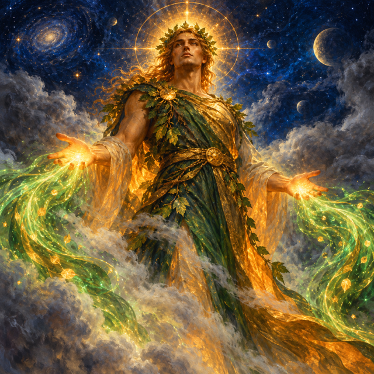
PaintedKib
beingThe god who sent life into the worlds, making beasts first and then men out of beasts.
Looks: A bright upright figure with open palms, warmth and green-gold light flowing outward from the hands.
- made out of beasts Man
- first broke Silence of Pegana
- Mung is jealous of and counters with death this
- Sish comes after in the order of things this
Facts and source words
- Sender of Life in all the Worlds; made beasts then men out of beasts
- First broke the Silence of Pegana by speaking with his mouth like a man
“Kib grew weary of the first game of the gods, and raised his hand in Pegana, making the sign of Kib, and Earth became covered with beasts for Kib to play with.” (S1)
“It was Kib who first broke the Silence of Pegana, by speaking with his mouth like a man.” (S1)
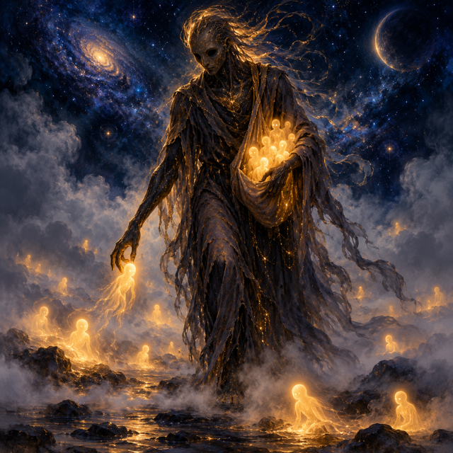
PaintedMung
beingThe Lord of all Deaths who follows life wherever it goes and cannot be outrun.
Looks: A tall dark figure with hollow eyes, patient and unsatisfied, gathering the fallen as it passes without hurry.
Facts and source words
- Lord of all Deaths between Pegana and the Rim
- Jealous of Kib's work; sent Death among beasts but could not stamp them out; busy among men
“Mung was jealous of the work of Kib, and sent down Death among the beasts, but could not stamp them out.” (S1)
“Mung, Lord of all Deaths between Pegāna and the Rim. The god of death.” (S2)
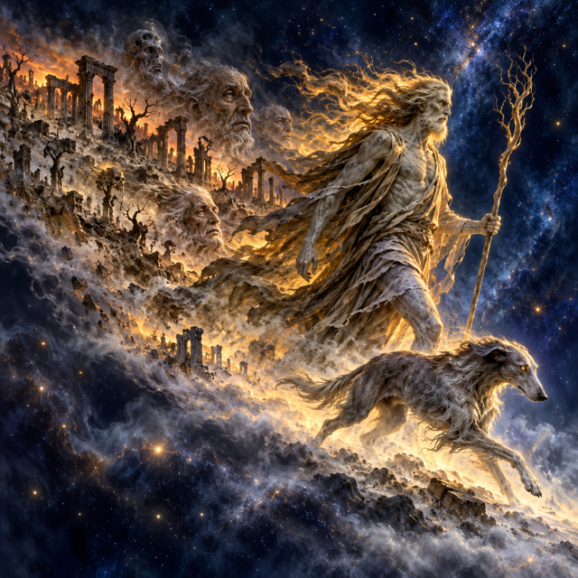
PaintedSish
beingThe Destroyer of Hours whose passage leaves everything behind him withered and old.
Looks: A striding grey figure with a grey hound running ahead, a wake of dry ruin and aged faces spreading behind.
Facts and source words
- Destroyer of Hours; time is his hound and runs before him
- Never steps backward; pleasant before his face, withered and old behind him; Kib precedes him and Mung follows
“Time is the hound of Sish.” (S1)
“Before Sish is Kib, and behind him goeth Mung.” (S1)
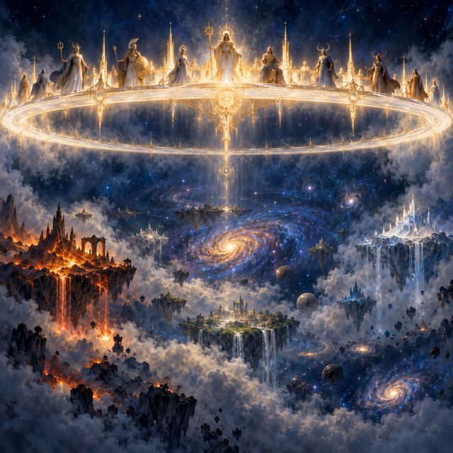
PaintedPegana
realmThe realm above all others, home of MANA and the gods, where silence is sacred law.
Looks: A luminous gold-white band above all the worlds, utterly still and heatless, lit only by the faint glow of gathered gods.
- The Small Gods dwell in this
Facts and source words
- The Middle of All; as much above it as below it; home of MANA and the small gods
- Without heat or light or sound save the drumming of Skarl; silence its sacred law
“Pegana was The Middle of All, for there was below Pegana what there was above it, and there lay before it that which lay beyond.” (S1)
“Pegana was without heat or light or sound, save for the drumming of Skarl” (S1)
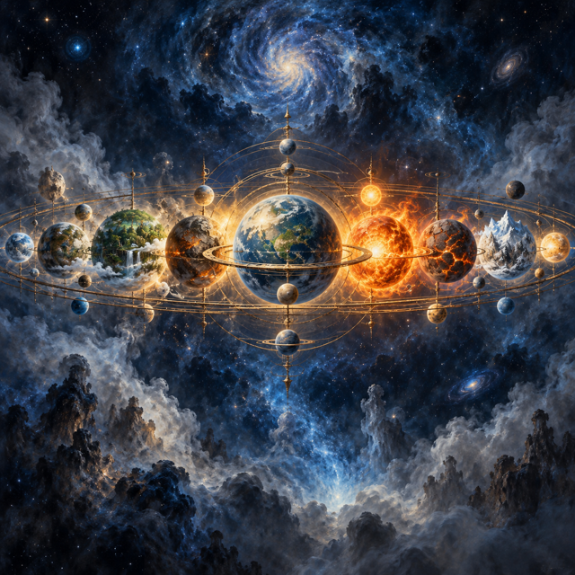
PaintedThe Worlds
realmThe realms made by the gods to amuse themselves, wheeling spheres holding suns between Pegana and Earth.
Looks: A deep blue band of spinning orbs and burning suns suspended in the mid-dark, slow and mechanical.
- Skarl's Drum may be the echoed or dreamed source of this
- The Small Gods made to amuse themselves while MANA rests this
Facts and source words
- Made by the small gods to amuse themselves; move in circles; hold suns and lights in the sky
- May be echoes of Skarl's drum or dreams in MANA's sleeping mind; will cease at the Last
“raising Their hands, each god according to his sign, They made the worlds and the suns, and put a light in the houses of the sky.” (S1)
“We will hastily put them behind us, and there shall be Worlds no more.” (S1)
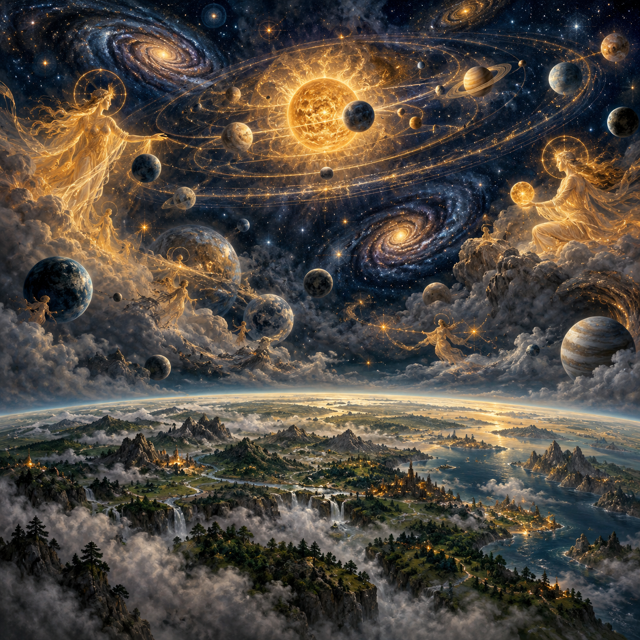
PaintedEarth
realmThe world made last to wonder, covered first with beasts then men, where life and death play out.
Looks: A grey-green band below the wheeling worlds, worn and textured, alive with small restless movement.
- The Small Gods made last to wonder this
Facts and source words
- Made last by the gods to wonder; covered first with beasts then men
- Where life and death play out and men seek the Secret they cannot find
“They made Earth to wonder, each god by the uplifting of his hand according to his sign.” (S1)
“And Earth was.” (S1)
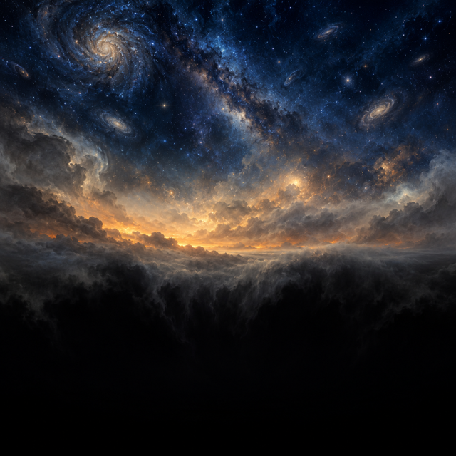
PaintedThe Void Beyond the Worlds
realmThe darkness past all worlds where Skarl walks alone when his work is done and nothing remains.
Looks: A black band at the very bottom of all things, featureless and without echo, swallowing even faint light.
- Skarl walks into at THE END this
Facts and source words
- Beyond all worlds; where Skarl walks when his work is over
- The place after THE END, holding neither world nor god
“Then shall Skarl put his drum upon his back and walk forth into the void beyond the worlds, because it is THE END, and the work of Skarl is over.” (S1)
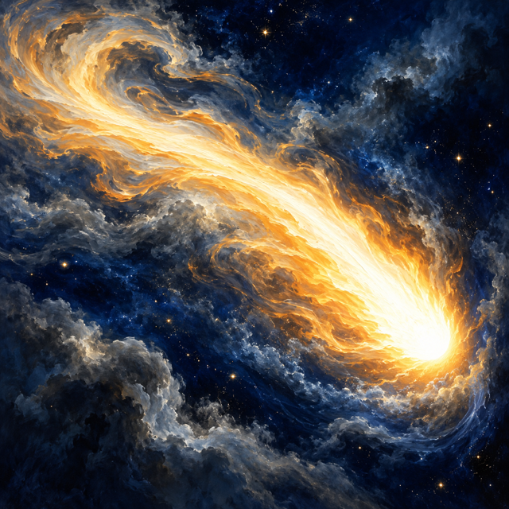
PaintedThe Bright One
beingThe Bright One made by the gods to seek the reason for the gods, travelling end to end of the worlds and never finding it.
Looks: A blazing streak of white light with a long flaring tail sweeping across the dark, restless and perpetually moving.
- mirrors the seeking of Man
- The Small Gods made as the Seeker this
Facts and source words
- Made by the gods as the Seeker with a flaring tail; travels end to end of the worlds in a hundred years
- Seeks the wherefore of the gods but never finds out; mirrors man's own fruitless seeking
“They made by the lifting of Their hands, each god according to his sign, the Bright One with the flaring tail to seek from the end of the Worlds to the end of them again, to return again after a hundred years.” (S1)
“Man, when thou seest the comet, know that another seeketh besides thee nor ever findeth out.” (S1)
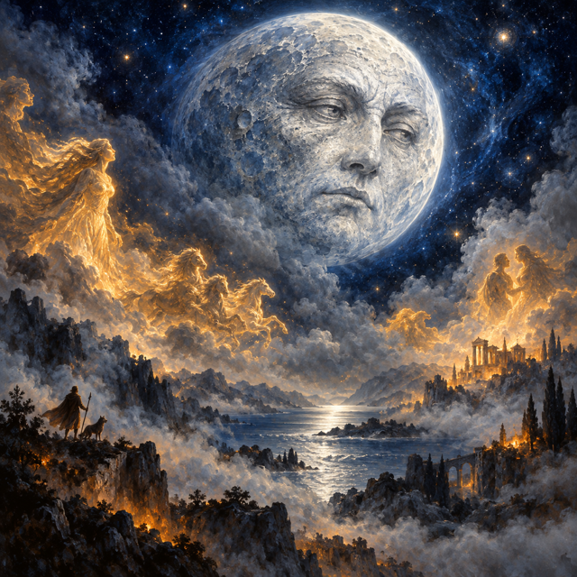
PaintedThe Moon
beingThe Watcher made by the gods, face wrinkled with mountains and worn with valleys, observing all things in silence.
Looks: A pale silver orb with a lined ancient face, its light cool and expressionless, always turned to watch what passes below.
- watches the games of in silence The Small Gods
- The Small Gods made as the Watcher this
Facts and source words
- Made by the gods as the Watcher; face wrinkled with mountains and worn with valleys
- Regards with pale eyes the games of the small gods; watches throughout MANA's rest and is silent
“They made the Moon, with his face wrinkled with many mountains and worn with a thousand valleys, to regard with pale eyes the games of the small gods” (S1)
“to watch throughout the resting time of MANA-YOOD-SUSHAI; to watch, to regard all things, and be silent.” (S1)
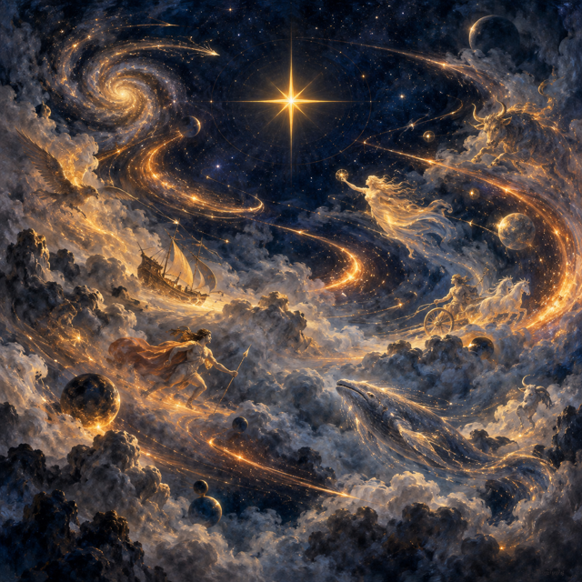
PaintedStar of the Abiding
beingThe Resting One set in the North by the gods, fixed and still, signaling to man that somewhere among the worlds is rest.
Looks: A single unwavering gold point of light in the northern dark, perfectly still while all else moves and seeks.
- mirrors the rest of MANA-YOOD-SUSHAI
- The Small Gods made as the Resting One, mirroring MANA this
Facts and source words
- Made by the gods to rest; set in the North; does not move nor seek
- Rests as MANA rests; signals to man that somewhere among the worlds is rest
“Let Us make one to rest. One not to move among the moving. One not to seek like the comet, nor to go round like the worlds; to rest while MANA rests.” (S1)
“Man, when thou seest the Star of the Abiding to the North, know that one resteth as doth MANA-YOOD-SUSHAI, and know that somewhere among the Worlds is rest.” (S1)
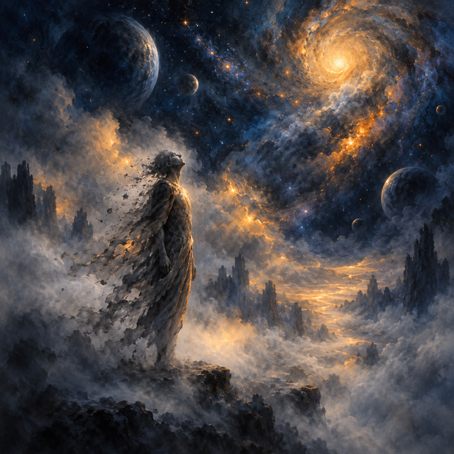
PaintedMan
beingMade by Kib out of beasts, man wonders and seeks the Secret but is kept from it by the Veil and taken in time by Mung.
Looks: A small upright grey figure in shadow, face turned upward with longing, a blur before the eyes, worn at the edges by time.
- Kib made out of beasts this
- The Bright One mirrors the seeking of this
Facts and source words
- Made by Kib out of beasts; wonders and seeks like the comet but never finds out
- Kept from understanding the Secret by a veil; subject to Mung's death and Sish's hours
“made Men: out of beasts he made them, and Earth was covered with Men.” (S1)
“the gods feared greatly for the Secret of the gods, and set a veil between Man and his ignorance that he might not understand.” (S1)
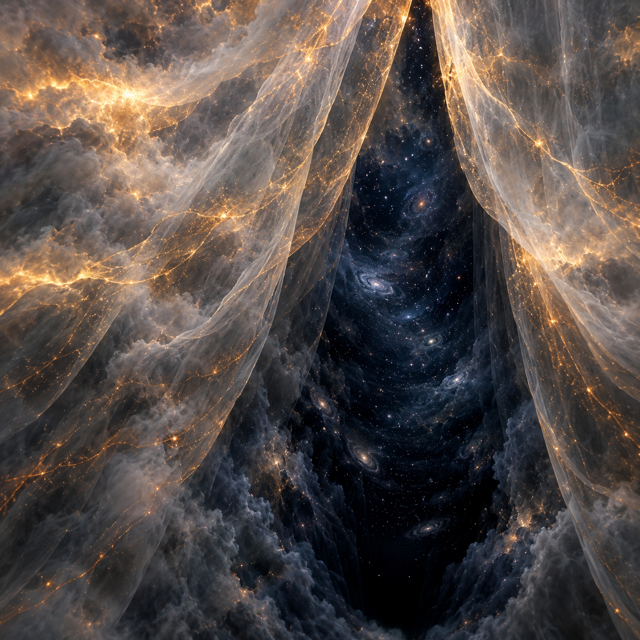
PaintedSecret of the Gods
stateThe hidden truth of why the gods were made and who made them, guarded from man at all cost.
Looks: A depth of darkness behind a veil, unreachable, neither spoken nor seen, suggesting immensity without revealing it.
- The Veil guards from man this
Facts and source words
- What the gods guard from man; endangered when Kib made men who wonder
- The hidden truth of why the gods were made and who made them
“If Kib has thus made beasts he will in time make Men, and will endanger the Secret of the gods.” (S1)
“Let Us make one to seek, to seek and never to find out concerning the wherefore of the making of the gods.” (S1)
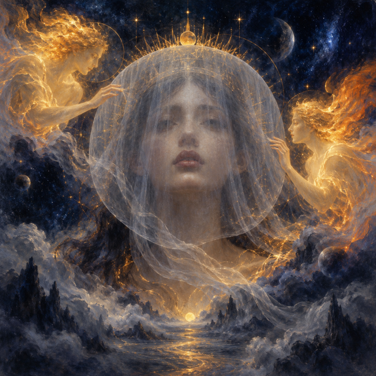
PaintedThe Veil
objectWhat the gods set between man and his ignorance so he cannot find the Secret.
Looks: A thin translucent curtain of grey light that blurs whatever lies behind it, hovering as a halo before every human face.
- guards from man Secret of the Gods
- The Small Gods set between man and his ignorance this
Facts and source words
- Set by the gods between Man and his ignorance to prevent understanding of the Secret
“the gods feared greatly for the Secret of the gods, and set a veil between Man and his ignorance that he might not understand.” (S1)
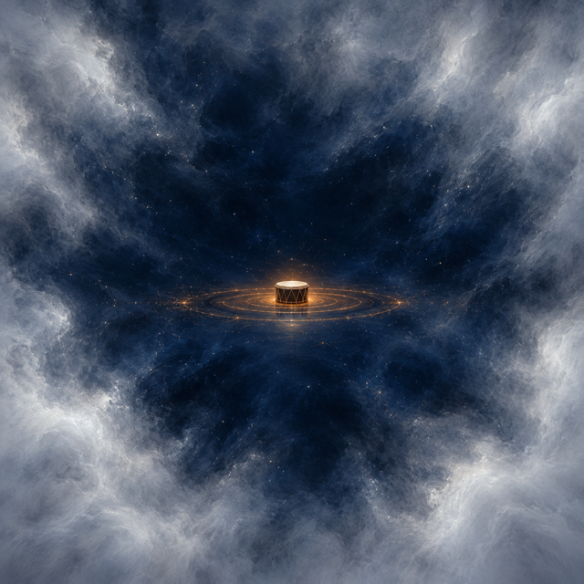
PaintedSilence of Pegana
stateThe sacred hush that holds while MANA sleeps, kept by gods who speak only with their hands.
Looks: A white absolute stillness pressing in from all sides, vast and clean, interrupted only by the faintest pulse of drum.
Facts and source words
- Sacred hush holding while MANA rests; gods speak only with hands to preserve it
- Broken by Kib's first spoken word; returns at the Last as silence like thunder in a cave
“only let Us not break the silence upon Pegana.” (S1)
“silence shall startle Pegana like thunder in a cave, and MANA-YOOD-SUSHAI shall cease to rest.” (S1)
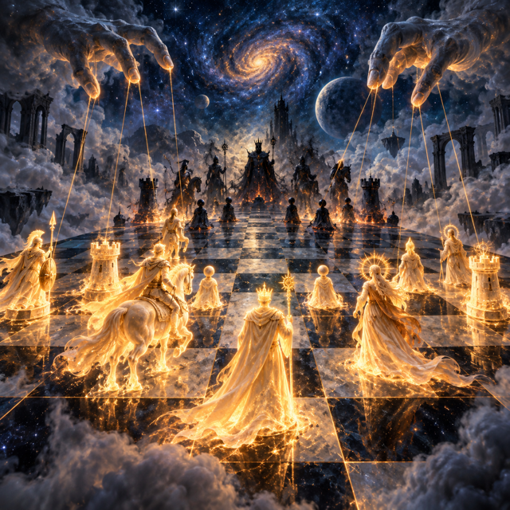
PaintedThe Game
stateThe play of the gods with worlds and life and death, demanded by Fate or Chance, destined to end in shame at the Last.
Looks: Shining white pieces moving on a vast dark board, animated by unseen hands, beautiful and doomed.
Facts and source words
- What Fate or Chance won and demanded of MANA; the play of the gods with worlds and life
- Will end in shame when MANA wakes at the Last and laughs
“Fate and Chance cast lots to decide whose the Game should be” (S1)
“We play with the Worlds and the Sun and Life and Death until MANA arises to rebuke us” (S1)
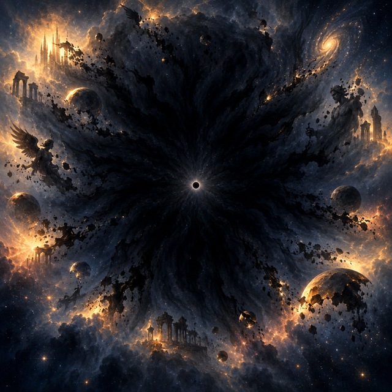
PaintedThe Last
stateThe final moment when MANA-YOOD-SUSHAI wakes, laughs, destroys the gods and all their worlds, and nothing remains.
Looks: A spreading dark silence consuming light and form outward from a single still point, absolute and without appeal.
- Silence of Pegana returns as thunder at this
Facts and source words
- When MANA forgets to rest; gods hide their worlds in shame; all departs
- Only MANA-YOOD-SUSHAI remains; after it there will be no small worlds nor big
“But at the Last will MANA-YOOD-SUSHAI forget to rest, and will make again new gods and other worlds, and will destroy the gods whom he hath made.” (S1)
“And Kib said: "After the going of the gods there will be no small worlds nor big."” (S1)
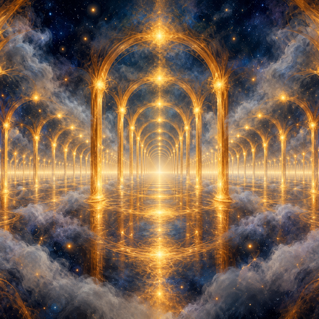
PaintedMiddle of Time
stateThe point where the gods were set after being made, with as much time before as behind, without beginning or end.
Looks: An endless corridor of gold light fading equally in both directions, every point identical, the middle everywhere at once.
Facts and source words
- Where the gods sit after being made; as much time before as behind; having no end it had no beginning
“When MANA-YOOD-SUSHAI had made the gods there were only the gods, and They sat in the middle of Time, for there was as much Time before them as behind them, which having no end had neither a beginning.” (S1)
Map of how the terms link (23 links)
5 items were left out because their source words did not match: Fate and Chance; the winner demanded gods from; Fate and Chance cast lots before THE BEGINNING to decide whose the Game shall be; The winner of the lot goes to MANA-YOOD-SUSHAI and demands gods be made; The gods sing the Chaunt declaring they are MANA's forgotten games and will end at the Last